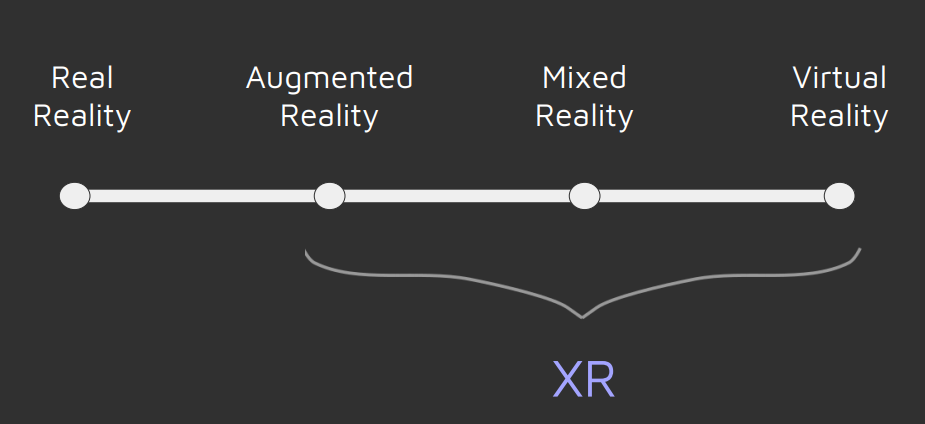
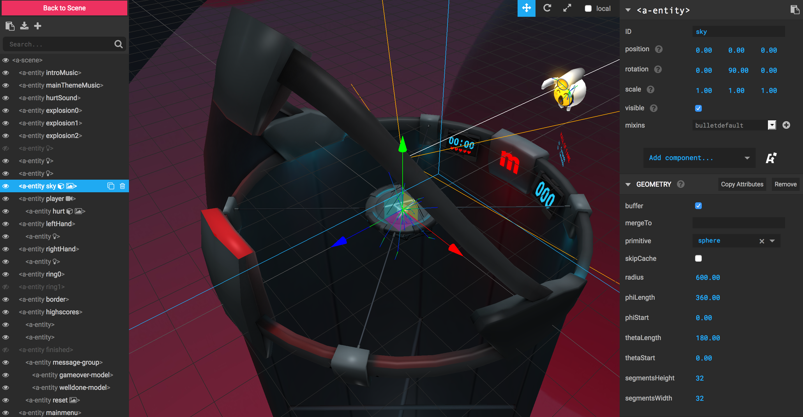
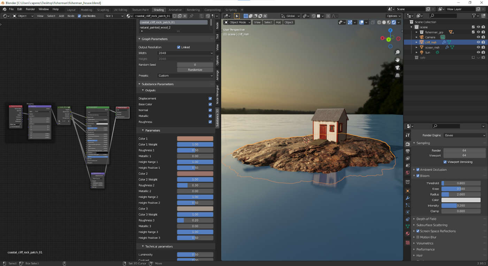

Open Metaverse Immersive: Day 1
Open Metaverse Immersive: Day 1
Open Metaverse Immersive: Day 1
Open Metaverse Immersive: Day 1
- Introductions and Course Overview
- Logistics
- Syllabus aand Topics
- The Metaverse
- What is Mixed Reality(XR)
- History
- Some Examples
- Creating your first metaverse Space
Topics for Today:
CLOUDS : networks from Jae Minard on Vimeo.
What is XR?
What is XR?



Platforms and Building Blocks
WebGL
WebGL (Web Graphics Library) is a JavaScript API for rendering interactive 2D and 3D graphics within any compatible web browser without the use of plug-ins. WebGL is fully integrated with other web standards, allowing GPU-accelerated usage of physics and image processing and effects as part of the web page canvas. WebGL became a standard in modern bowsers in 2011
WebGL is great, but rather involved to program so we have helper libraries, such as ...

Three.js

BabylonJS
BabylonJS VR Helper
Three.js and Babylon started as 3d in the browser libraries and added VR features later. But we also have a VR first library built on top of Three.js...

Aframe

Visual Inspector
 https://github.com/aframevr/aframe-inspector https://3d.si.edu/
https://3d.si.edu/
- Some test scenes
- http://mhellar.com/af/6
- http://mhellar.com/af/5
- https://aframe.io
